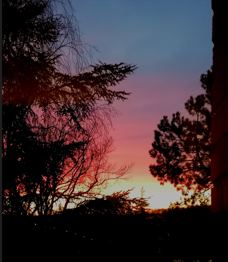

2 ЦÑни гоÑо, ÑÑни ÑеÑÑÑо
Pleure forêt, pleure ma soeur
(Jedanaesta Rukovet - 11ème guirlande :01:37 - 04:01 )
|
 |
|
|
[1] [1] У СÑбиÑи 1906. године Ñазликовали Ñмо, Ñ âÐÑÐ¶Ð½Ð¾Ñ Ð¡ÑбиÑиâ, âСÑаÑÑ Ð¡ÑбиÑÑâ (одноÑно ÐоÑово и ÑевеÑнy половинy СанÑака) од ÐакедониÑе. Ðпак, Ñини ми Ñе да Ñе Ñезик ове пеÑме македонÑки, а не ÑÑпÑки диÑалекÑ. ÐÐµÐ²Ð°Ñ ÑÑоÑÑиÑ
овне веÑзиÑе, ÐлекÑÐ°Ð½Ð´Ð°Ñ Ð¡Ð°ÑиевÑки, Ñе биo неÑÑмÑиво ÐакедонаÑ. ÐеÑÑÑим Ñема младоÑÑи коÑа Ñе никад не вÑаÑа Ñе ÑнивеÑзална! Version Mokranjac |

ÐлекÑÐ°Ð½Ð´Ð°Ñ Ð¡Ð°ÑиевÑки (1922 - 2002) |
[1] Dans la Serbie de 1906, on distinguait, dans la "Serbie du Sud", la "Vieille Serbie" ("Stara Srbija", à savoir le Kosovo et la moitié nord du Sandžak) de la Macédoine. Pourtant la langue de ce chant me semble être du macédonien, plutôt qu'un dialecte serbe . Le chanteur de la version à trois couplets, Aleksandar Sarievski, est sans conteste Macédonien.. Le thème de la jeunesse qui ne revient jamais, lui, est universel! Version chantée par Alexandre Sarievski (1922-2002) пeвa ÐлекÑÐ°Ð½Ð´Ð°Ñ Ð¡Ð°ÑиевÑки |